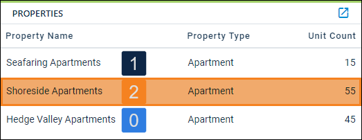
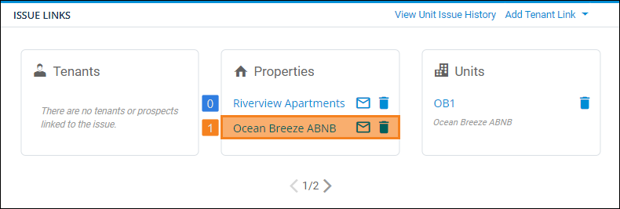

Source: https://rmxhelp.rentmanager.com/Topics/Express/KB/Script-Index-Property.htm
Property Indexing
In scripting, an index is how instances of an entity or other record are counted in a script. Indexing manages the one-to-many relationship that occurs between two classes.
When the Property class is used as a child class in a script (e.g., [OwnerProspect().Property().Function]), an index can be specified to uniquely identify properties that are associated with the preceding class. For example, owner prospects can be associated with multiple properties, and indexing can be used to identify each of those properties.
Property Index Relationships
The Property class may use an index parameter when it is preceded by certain classes. A few example classes are described below.
OwnerProspect.Property Indexing
Properties associated with an owner prospect are indexed based on alphabetical order. The property linked to the owner prospect that is alphabetically first has an index of 0, the next property alphabetically has an index of 1, and so on.
You can view a property's index on an owner prospect by viewing the Properties section.

[OwnerProspect().Property(2).UnitCount()]
Using the information in the above image, this script returns the Unit Count for the property Shoreside Apartments, the third property alphabetically.
ServiceManager.Property Indexing
Properties associated with a service issue are indexed based on the order they are linked to the issue. The first property linked on the issue has an index of 0, the second property has an index of 1, and so on.
You can view a property's index on an issue by viewing the order in which the properties display on the Issue Links tile.

[ServiceManager().Property(1).Comment()]
Using the information in the above image, this script returns the Comment on the Other Information tile of the Ocean Breeze ABNB property, the second property linked to the service issue.